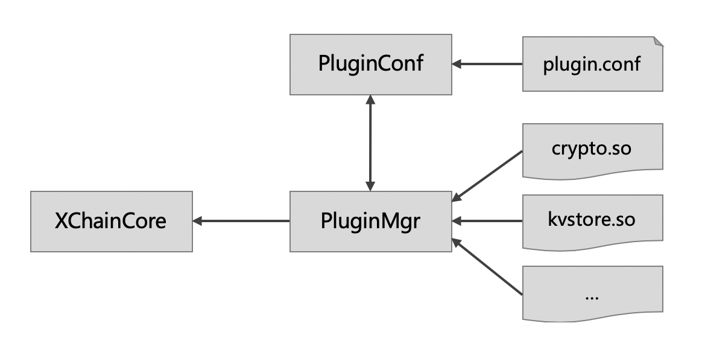

插件机制¶
可插拔架构¶
XuperChain 从设计之初就以高性能、可插拔的区块链底层技术架构为目标，因此整个 XuperChain 在模块化、接口化设计上做了很多的抽象工作。而插件化机制就是服务于 XuperChain 可插拔的架构目标，使得所有模块具有同样的可插拔机制，并能满足对模块插件的加载、替换等生命周期的管理。
通过插件化机制可以实现如下架构优点：
代码解耦 ：插件化机制使 XuperChain 的架构框架与各个模块的实现相解耦，模块统一抽象出基本数据结构与框架的交互接口，模块只要符合统一接口即可做到插拔替换。
高可扩展 ：用户可以自己实现符合业务需求的模块插件，直接替换插件配置就可以实现业务扩展。
发布灵活 ：插件可以单独发布，配合插件生命周期管理甚至可以实现插件的单独更新，而作为插件的开发者也可以自由选择开源发布或者只发布插件二进制文件。
插件框架设计¶
插件框架用以根据需求创建插件实例，考虑到 XuperChain 单进程多链、插件多实例多版本等需求，整体设计
模块和插件定义¶
XuperChain 中，一种 模块 是指：包含一组相同数据结构和接口的代码集合，能实现相对独立的功能。
一个模块可以有多种实现，每种实现形成一个 插件 。
模块和插件具有如下约束：
同一种模块，需要抽象出公共数据接口和接口方法。
该模块的所有插件，需要实现定义的所有公共接口，并不包含定义接口以外的public接口。
每个插件需要实现一个
GetInstance接口，该接口创建并返回一个插件对象引用，该插件对象包含插件定义的所有公共接口。
因此，我们可以在框架中定义一组公共的数据结构和接口，例如：
1package kvstore
2
3type KVStore interface {
4 Init(string)
5 Get(string) (string, error)
6 Set(string, string) error
7}
并在插件代码中，引用并实现该公共接口定义，例如：
1import "framework/kvstore"
2
3type KVMem struct {
4 meta kvstore.Meta
5 data map[string]string
6 rwmutex sync.RWMutex
7}
8
9// 每个插件必须包含此方法，返回一个插件对象
10func GetInstance() interface{} {
11 kvmem := KVMem{}
12 return &kvmem
13}
14
15// 插件需要实现接口定义中的所有方法
16func (ys *YourKVStore) Init(conf string) {
17 // Your code here
18}
19
20func (ys *YourKVStore) Get(key string) (string, error) {
21 // Your code here
22}
23
24func (ys *YourKVStore) Set(key string, value string) error {
25 // Your code here
26}
配置化管理¶
插件通过配置文件组织可选插件以及 插件子类型 、插件路径 、版本 等信息。考虑到同一个链中可能需要创建某个插件的多种实例，因此所有的插件都以数组的方式声明该插件不同的子插件类型对应的链接库地址。
举例如下：
1{
2 "kvstore":[
3 {
4 "subtype": "Memory",
5 "path": "plugins/kv-memory.so.1.0.1",
6 "version": "1.0.1",
7 "ondemand": false
8 },
9 {
10 "subtype": "Json",
11 "path": "plugins/kv-json.so.1.0.0",
12 "version": "1.0.0",
13 "ondemand": false
14 }
15 ],
16 "crypto":[
17 {
18 "subtype": "GuoMi",
19 "path": "plugins/crypto/crypto-gm.so.1.1.0",
20 "version": "1.1.0",
21 "ondemand": false
22 },
23 ]
24}
PluginMgr¶
PluginMgr定义了插件管理的对外接口。
1// 根据插件配置文件初始化插件管理对象
2func CreateMgr(confPath string) (pm *PluginMgr, err error);
3
4// 指定插件名称和插件子类型，获取该插件的一个实例
5func (pm *PluginMgr) CreatePluginInstance(name string, subtype string)
需要插件功能的主逻辑中，要通过 CreateMgr 创建一个PluginMgr的实例，该实例会根据传入的配置文件创建插件实例。
PluginMgr使用¶
每个模块可以定义自己的实例创建方法，并可以自行确定是否使用默认模块，或使用插件化的模块。
1func NewKVStore(pm *pluginmgr.PluginMgr, subType string) (store KVStore, err error) {
2 var iface interface{}
3 iface, err = pm.CreatePluginInstance(KV_PLUGIN_NAME, subType)
4 if err != nil {
5 return
6 }
7
8 if iface != nil {
9 // registered external plugin
10 store = iface.(KVStore)
11 } else {
12 // no plugin registered, use default one
13 store = new(KVText)
14 }
15 return
16}
XuperChain 的插件¶
目前，插件化机制已经在 XuperChain 中应用于包括密码学、共识、KV引擎等多个核心模块中，初步实现了插件的解耦和可扩展性目标。
以密码学为例，通过插件机制，我们可以实现多套不同的密码学算法的封装，目前 XuperChain 已经实现了包括Nist P256、Schnorr签名、国密算法等多个不同的密码学插件，并支持代码和二进制产出的独立发布。
当然，目前插件机制是基于go plugin的实现，限于go plugin本身实现上的一些局限性，插件机制也具有如下需要改进的地方：
跨平台支持：目前尚不支持Windows系统的插件化，只支持Mac/Linux系统。
依赖版本限制：插件的依赖库版本和框架的依赖库版本不能有任何的差别，否则会加载失败。
相信在后续 XuperChain 迭代过程中，上述问题也会得到解决。